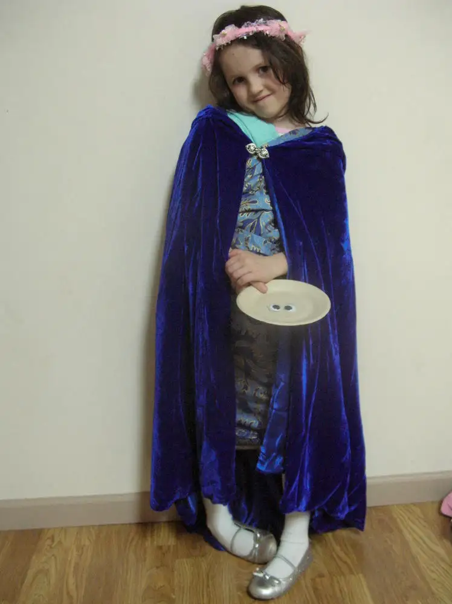

FARGO — Reminiscing over Halloweens past, Tiffany Petru, 23, a Lutheran Church Missouri Synod Christian, brims with fond memories.
“We used to have Halloween parties at my church,” she recalls. “We’d try to eat an apple off a string, as opposed to bobbing for apples; make tissue paper ghosts; and attempt a spooky room, which ended up being a room with lots of streamers that we walked blindfolded through.”
Not to mention the Halloween reruns on television — Disney and Charlie Brown specials — and decorating the house with pumpkins and teddy bears.
Despite her warm feelings toward Halloween, Petru says some of her friends have expressed concern about Halloween’s satanic undertones. But she remains positive.
“You can still carve or craft an artsy pumpkin without it supporting non-Christian views. It’s art,” she says.
And though she agrees there’s an element of death highlighted on Halloween night, Petru sees it more as “a reminder of where we’re going someday,” and not something to avoid.
“People get rattled on this topic because they’re trying to find a definitive line between where Christians are to mix with secular society,” she says, noting that as long as we keep God in our sights, there’s no harm in it.
Pagan roots
William Balsley, a longtime pagan, knows the evening of Oct. 31 as “Samhain,” the last of the harvest festivals or “the witch’s new year.”
“It’s a time to remember those who have crossed over and to celebrate and honor them in various manners of worship,” he says.
This could include a “dumb feast” or dinner where no one speaks, an extra place is set, and a “beloved departed is invited to join us and impart, through spirit, whatever message they may have for us,” he notes.
In addition, altars may be set up with pictures and items belonging to the deceased, and games, songs and dressing up in costume might take place. “We open the door and gift the trick-or-treaters,” Balsley says. “We tell stories. We give thanks to the Lord and Lady. We have cakes and ale.”
Healings, tarot readings, palmistry and spells not intended to harm anyone can also be part of these gatherings, he adds. “(This evening) is when the veils between the worlds are the thinnest.”
Highlighting the unholy
Elizabeth Anderson, a senior at Fargo North High School who has grown up with both Protestant and Catholic traditions, says that as a Christian, she feels Halloween has derailed from its original purpose of “warding off evil.”
Now absorbed into modern culture, Anderson says, the holiday as it is perpetuated exposes children to “gory images,” and teaches them it’s okay to accept candy from complete strangers and view evil as a source of entertainment.
“Teenagers, especially, are curious, and many like a good adrenaline rush,” she says, making them prime targets for being led toward “unholy rituals” like Ouija boards, séances and other “spiritual activity outside the biblical guidelines.”
While Anderson used to take part in some of these things herself, she says, as her faith has grown, she’s ditched a lot of what used to attract her for more wholesome pursuits.
“It’s okay to have fun, but with anything we need to keep in mind the effects it is having on society as a whole,” she says.
Heralding the holy
{kind=link}

Lisa Gray remembers taking part in haunted houses as a teenager and “getting freaked out over scary things.” But the Catholic mother now says she’s become more thoughtful about the messages she wants to send.
“As a Christian, why would I want to promote anything contrary to my God and the love that I have for him and others?” she says.
Her family decorates their home with harvest themes, but avoids anything that would promote “the forces of darkness” in any manner.
To her, Halloween, like any holiday, can provide teachable moments.
“Our Father, who art in heaven, ‘hallowed’ be thy name — that means holy,” Gray says. “We are celebrating a holy evening, the evening before All Saints Day. We can pull back the Christian roots of it by looking at the word itself.”
Gray says Halloween also brings opportunities for Christians to “share the truth that we’re all made to be saints in heaven.”
Though her kids love dressing up in general, superheroes and ballerinas give way to saints and angels on Halloween.
“We ask (the kids), ‘Who are the saints who have gone before us? How did they live their lives well, and how can we imitate that?’ ” Gray says. “It’s exciting for them to think, ‘What saint can we be this year?’ ”
Gray says the family still welcomes trick-or-treaters to their home, seeing it as a chance to be hospitable, but she’ll often add little notes to the treats about the true meaning of Halloween.
“There are a lot of beautiful things that have all come together rather strangely in Halloween; it’s quite a mix-up of a lot of different things,” Gray says. “But we promote the light of the holiday and enjoy the treats because we are looking forward to the happiness of heaven.”
[For the sake of having a repository for my newspaper columns and articles, I reprint them here, with permission, a week after their run date. The preceding ran in The Forum newspaper on Oct. 31, 2015.]